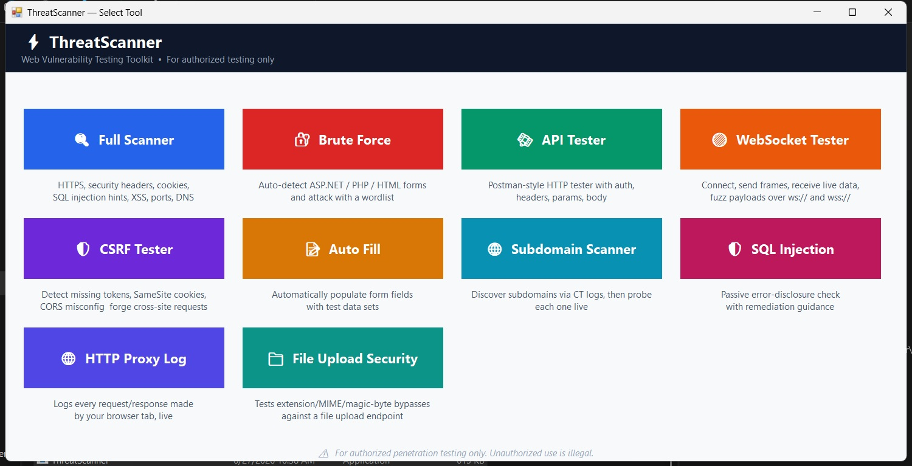

High-performance, non-blocking C# WinForms application equipped with 10 powerful modules for comprehensive security audits, proxy logs, and API fuzzing.
Central launcher interface (MainForm.cs) providing instant access to all 10 security scanning suites.

Place your screenshot at ./assets/screenshot.jpg to display your live application interface here.
Web Vulnerability Testing Toolkit • For authorized testing only
🔍 Full Scanner
🔐 Brute Force
🛰️ API Tester
🟠 WebSocket
🛡️ CSRF Tester
📝 Auto Fill
Comprehensive security testing suite featuring 10 specialized, non-blocking tools defined in MainForm.cs.
HTTPS, security headers, cookies, SQL injection hints, XSS, open ports, and DNS record evaluation in a single unified scan.
Auto-detect ASP.NET, PHP, or standard HTML forms and execute high-speed wordlist dictionary attacks.
Postman-style HTTP API tester supporting custom authentication, HTTP headers, URL parameters, and request body payloads.
Connect, transmit WS frames, receive real-time streaming data, and fuzz payloads over ws:// and wss:// protocols.
Detect missing anti-CSRF tokens, SameSite cookie misconfigurations, loose CORS policies, and forge cross-site HTTP requests.
Automatically populate complex multi-input web forms with custom or pre-configured test data sets for rapid input testing.
Discover hidden subdomains via Certificate Transparency logs (crt.sh, CertSpotter) and probe each target live.
Passive and active database error-disclosure checker equipped with step-by-step remediation guidance.
Intercept and log every HTTP request/response made by your application or browser tab live in real-time.
Audit file upload endpoints against extension bypasses, MIME-type spoofing, and magic-byte header bypasses.
Download the Windows compiled application release or explore the source repository.
Standalone C# Windows Forms application compiled binary ready for execution.
Supports Windows 10 / 11 (.NET Framework / .NET Core)
Standalone executable with zero external installations required
Access full C# WinForms solution files, inspect form modules, or contribute improvements.
Full Visual Studio C# Solution (.sln)
Open Source / MIT License
ThreatScanner is strictly intended for legal penetration testing, vulnerability assessments, and educational security research on systems you own or have explicit authorization to test. Unauthorized scanning or attacking against targets is strictly prohibited and illegal.